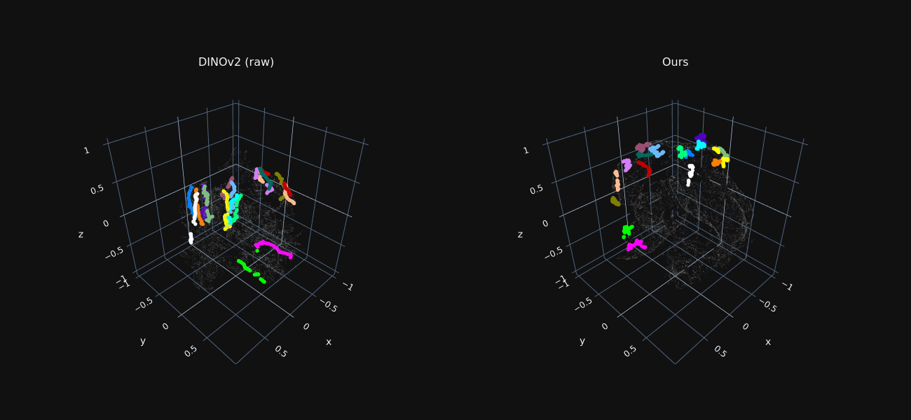
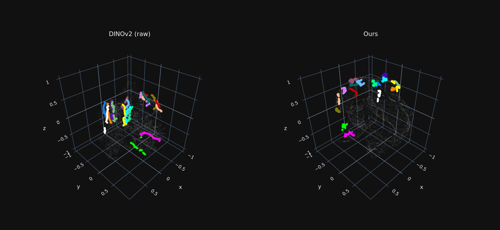
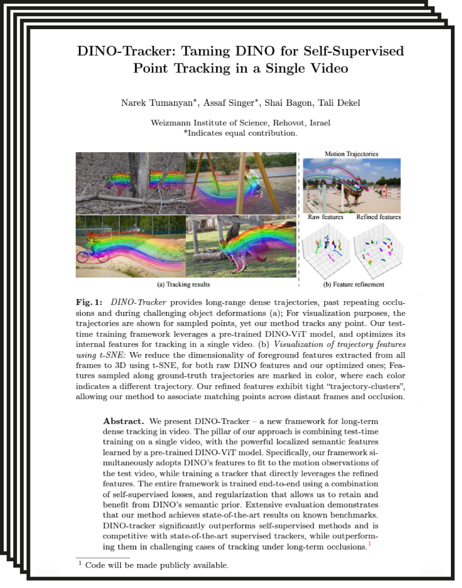
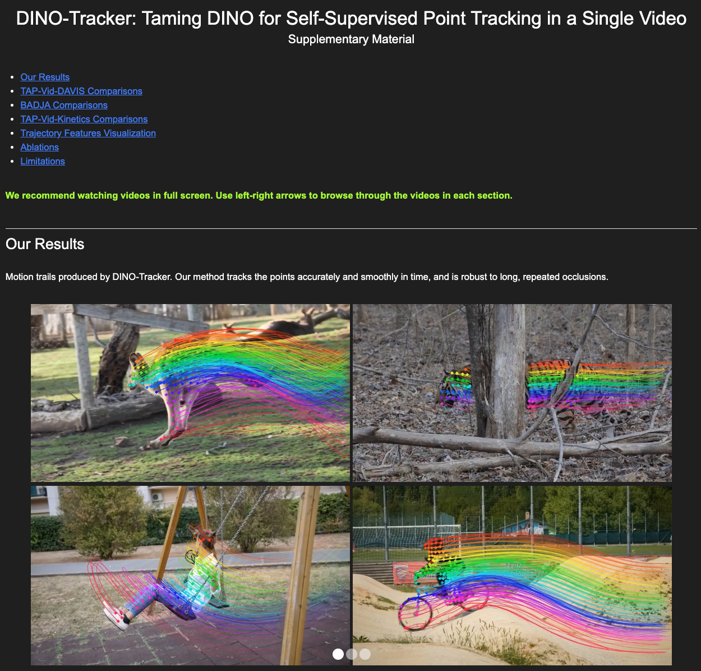

Abstract
We present DINO-Tracker -- a new framework for long-term dense tracking in video. The pillar of our approach is combining test-time training on a single video, with the powerful localized semantic features learned by a pre-trained DINO-ViT model. Specifically, our framework simultaneously adopts DINO's features to fit to the motion observations of the test video, while training a tracker that directly leverages the refined features. The entire framework is trained end-to-end using a combination of self-supervised losses, and regularization that allows us to retain and benefit from DINO's semantic prior. Extensive evaluation demonstrates that our method achieves state-of-the-art results on known benchmarks. DINO-tracker significantly outperforms self-supervised methods and is competitive with state-of-the-art supervised trackers, while outperforming them in challenging cases of tracking under long-term occlusions.
Method
Our tracker is trained on a single input video. The core of our method is harnessing a pre-trained DINOv2-ViT model [6], which provides our framework with an initial semantic and localized representation. Moreover, using raw DINO feature matching can serve as a strong baseline for tracking (see Tab. 1 and Sec. 4.1 in the paper). However, they lack temporal consistency and fine-grained localization required for accurate long-term tracking. To this end, we train Delta-DINO -- a feature extractor that predicts a residual to the pre-trained DINO features. Our framework simultaneously refines DINO's features to fit to the motion observations of the test video, while training a tracker that directly leverages the refined features. Following the prevailing approach, we extract features, for both the query $\mathbf{x_q}$ and a target frame $\mathbf{I}^t$, and estimate the final position $\hat{\mathbf{x}}^t$ in a target frame $\mathbf{I}^k$ based on the maximal location in the cost volume. DINO prior provides our framework robust correspondences across distant frames, achieving SOTA performance in tarcking through long-term occlusions.
TAP-Vid-DAVIS Comparisons
Qualitative comparisons to Co-Tracker [1], Omnimotion [2] and TAPIR [3] on TAP-Vid-DAVIS-480 [5] (Figure 4 in the paper).
For methods that track behind occlusions, we use empty circles for points predicted as occluded.
Our method exhibits better association of tracks across occlusions and tracks more persistently than SOTA trackers.
By utilizing DINO's prior, our method tracks better on regions where optical flow is lacking, e.g. compared to Omnimotion.
See more comparisons in the supplementary material.
Tracking Performance by Occlusion Rate
We group test videos from TAP-Vid DAVIS into three sets according to occlusion rate (estimated using ground-truth visibility annotations),
and compare performance at each set to Co-Tracker [1], Omnimotion [2], TAPIR [3], and PIPs++ [4].
Positional accuracy and Average Jaccard are reported for each set separately.
While the performance of all methods decreases as the occlusion rate increases,
our DINO-Tracker exhibits a smaller gap and outperforms all methods with a large margin under a high occlusion rate.
This demonstrates the benefit of harnessing the semantic information encoded in DINO's pre-trained features.
Omnimotion [2], which solely relies on optical flow and video reconstruction, struggles in this case.
Trajectory Feature Visualization
 

We reduce the dimensionality of foreground features extracted from all frames to 3D using t-SNE, for both raw DINO features and our optimized ones.
Features sampled along ground-truth trajectories are marked in color, where each color indicates a different trajectory.
Our refined features exhibit tight “trajectory-clusters”, allowing our method to associate matching points across distant frames and occlusion.
Feature Refinement Ablation
Comparison with two baselines: 1. raw DINOv2 [6] tracking, 2. LoRA [7] fine-tuning (Section 4.2 in the paper).
We show color-coded query points and their corresponding tracks (top row),
and correlation maps for a single query point (marked in yellow; bottom row).
Raw DINOv2 and LoRA-tuned features are not well localized and are ambiguous in semantically similar regions (e.g. eyes of the fish).
On the other hand, our refinement approach using Delta-DINO CNN produces more localized heatmaps, resulting in smoother and more consistent tracks.
Paper
|  |
DINO-Tracker: Taming DINO for Self-Supervised Point Tracking in a Single Video |
Supplementary Material
|  |
Bibtex
Acknowledgements
We would like to thank Rafail Fridman for his insightful remarks and assistance.
We would also like to thank the authors of Omnimotion for providing the trained weights for TAP-Vid-DAVIS and TAP-Vid-Kinetics videos.
The project was supported by an ERC starting grant OmniVideo (10111768),
and the Carolito Stiftung.
Dr. Bagon is a Robin Chemers Neustein AI Fellow.
He received funding from the Israeli Council for Higher Education (CHE) via the Weizmann Data Science Research Center and MBZUAI-WIS Joint Program for AI Research.
References
[1] Nikita Karaev, Ignacio Rocco, Benjamin Graham, Natalia Neverova, Andrea Vedaldi, and Christian Rupprecht. CoTracker: It is Better to Track Together. arXiv, 2023.
[2] Qianqian Wang, Yen-Yu Chang, Ruojin Cai, Zhengqi Li, Bharath Hariharan, Aleksander Holynski, Noah Snavely. Tracking Everything Everywhere All at Once. ICCV, 2023.
[3] Carl Doersch, Yi Yang, Mel Vecerik, Dilara Gokay, Ankush Gupta, Yusuf Aytar, Joao Carreira, Andrew Zisserman. TAPIR: Tracking Any Point with per-frame Initialization and temporal Refinement. ICCV, 2023.
[4] Yang Zheng, Adam W. Harley, Bokui Shen, Gordon Wetzstein, Leonidas J. Guibas. PointOdyssey: A Large-Scale Synthetic Dataset for Long-Term Point Tracking. ICCV, 2023.
[5] Carl Doersch, Ankush Gupta, Larisa Markeeva, Adrià Recasens, Lucas Smaira, Yusuf Aytar, João Carreira, Andrew Zisserman, Yi Yang. TAP-Vid: A Benchmark for Tracking Any Point in a Video. NeurIPS, 2022.
[6] Maxime Oquab, Timothée Darcet, Théo Moutakanni, Huy Vo, Marc Szafraniec, Vasil Khalidov, Pierre Fernandez, Daniel Haziza, Francisco Massa, Alaaeldin El-Nouby, Mahmoud Assran, Nicolas Ballas, Wojciech Galuba, Russell Howes, Po-Yao Huang, Shang-Wen Li, Ishan Misra, Michael Rabbat, Vasu Sharma, Gabriel Synnaeve, Hu Xu, Hervé Jegou, Julien Mairal, Patrick Labatut, Armand Joulin, Piotr Bojanowski.
DINOv2: Learning Robust Visual Features without Supervision. arXiv, 2023.
[7] Edward J. Hu, Yelong Shen, Phillip Wallis, Zeyuan Allen-Zhu, Yuanzhi Li, Shean Wang, Lu Wang, Weizhu Chen. LoRA: Low-Rank Adaptation of Large Language Models. ICLR, 2022.